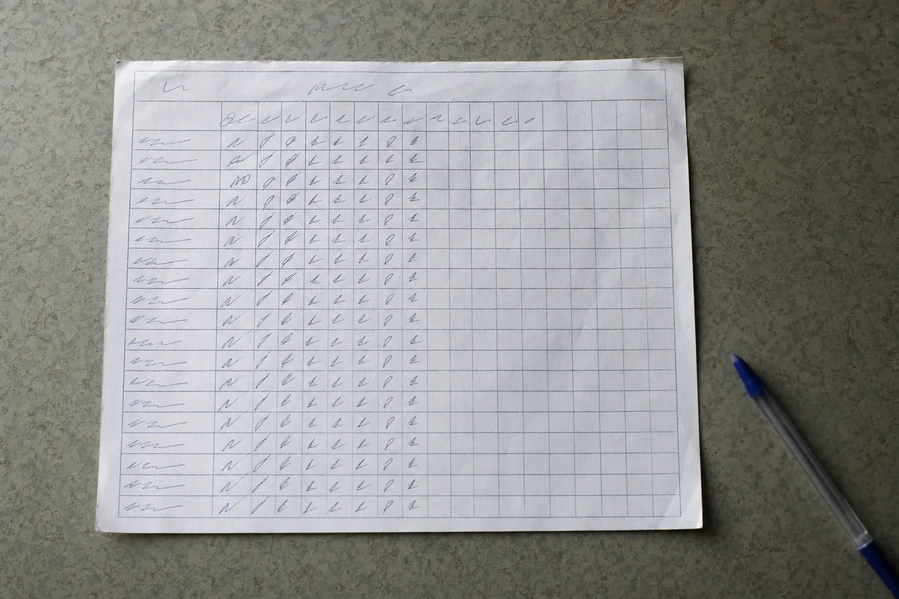

EL TÍO AI AUDIT · GIMNASIOS Y ESTUDIOS
Para entonces la persona hace tres semanas que no viene y ya se acostumbró a no venir. La señal existía y estaba en el molinete.
Acá recién se entera el sistema
Por eso el papel siempre llega tarde: el alta y la baja son dos actos administrativos, y entre uno y otro pasa todo lo que importa sin que nadie lo anote. El molinete sí lo anota, todos los días, persona por persona.
La señal existía y estaba en el molinete.
SERIE 0001 A 0005
Va en cualquier caso, sea cual sea lo que encuentre el Audit. Es lo que hace que el número de socio que ya vive en el carnet, en el llavero y en la placa del casillero sea la misma clave en todos lados.
Socios y consultas en un solo lugar, con su estado real y no repartidos entre un cuaderno y un WhatsApp.
Consultas, pases de prueba, altas y bajas unificados por persona.
Tu lista para avisar clases nuevas y para volver a tocar a quien preguntó y nunca entró.
El sitio del gimnasio con la consulta y el pase de prueba, editable por ustedes.
Responde precios, horarios y clases, y toma los datos del interesado antes de que se vaya.
SERIE 0001 A 0007
Entramos por un problema concreto y miramos toda la operación. Muchas veces lo que más deja no es lo que el dueño vino a buscar, y decirlo es parte del trabajo.
Consultas que llegan, pases de prueba y quién nunca se anotó.
Altas, bajas, cobros y lo que se hace a mano en el mostrador.
Asistencia registrada, que es lo que permite ver una baja antes de que pase.
Cómo llegan socios nuevos y qué convenios existen con la zona.
Precios, horarios y clases preguntados veinte veces por día.
Qué podría resolver quien atiende el mostrador con mejores herramientas.
El sistema de gestión, el molinete y qué datos quedan encerrados ahí.
7 ÁREAS × 1 LLAMADA DE 30 MINUTOS
Lo que te llevás es una hoja: la conclusión arriba, el detalle abajo y la fecha al pie. Lo revisa una persona antes de que te llegue.

Miramos cómo funciona el gimnasio hoy, área por área. No la impresión: los datos que ya existen.
Se ordena el proceso antes de automatizarlo. Automatizar algo malo lo hace más rápido, no mejor.
Solo lo que tiene sentido en tu operación, no lo que está de moda.
Quien atiende el mostrador queda sabiendo operarlo. Si no, en tres meses no lo usa nadie.
DESPUÉS DE LA BASE
Ejemplos de lo que se puede implementar una vez que la base está. Lo que te toque sale del Audit.
Todos los que consultaron, probaron o preguntaron el precio y no compraron, ordenados por qué tan cerca estuvieron. Con el mensaje preparado.
Qué empresas, hoteles, edificios y coworkings hay alrededor y cuáles tienen sentido como acuerdo, con el contacto y el argumento.
Lo que cueste implementar sale en el mapa, con el alcance de cada cosa al lado.
Sabes quién no vino hoy. Otra cosa es quién cambió su patrón hace dos semanas.
Seguramente. La pregunta es si alguien los abre y si dicen a quién llamar hoy.
Por eso el mensaje lo aprueba una persona y se manda solo a quien tiene sentido. Y hay un motivo de contacto que no es de venta y ya está en papel: en muchas jurisdicciones el gimnasio está obligado a tener el apto físico de cada socio, y ese certificado vence al año. Avisarle a alguien que se le vence el mes que viene le ahorra un problema a los dos.
Sí. Por eso se ordenan por qué tan cerca estuvieron y se empieza por arriba.
Media hora de llamada y un mapa de tu operación por USD 50. Si el Audit no encuentra nada que valga la pena implementar, el mapa queda tuyo igual.